Chapter 2 Logic
Logic is a systematic way of thinking that allows us to parse the meanings of sentences and to deduce new information from old information. You use logic informally in everyday life and certainly also in doing mathematics. For example, say you are working with a certain circle (call it “Circle X”), and suppose you have available the following two pieces of information.
1. Circle X has a radius of 3 units.
2. If any circle has radius r, then its area is πr2 square units.
You have no trouble putting these two facts together to get:
3. Circle X has area 9π square units.
In doing this you are using logic to combine existing information to produce new information. Because deducing new information is central to mathematics, logic plays a fundamental role. This chapter is intended to give you a sufficient mastery of it.
It is important to realize that logic is a process of deducing information correctly, not just deducing correct information. For example, suppose we were mistaken and Circle X actually had a radius of 4, not 3. Let’s look at our exact same argument again.
1. Circle X has a radius of 3 units.
2. If any circle has radius r, then its area is πr2 square units.
3. Circle X has area 9π square units.
The sentence “Circle X has a radius of 3 units.” is now untrue, and so is our conclusion “Circle X has area 9π square units.” But the logic is perfectly correct; the information was combined correctly, even if some of it was false. This distinction between correct logic and correct information is significant because it is often important to follow the consequences of an incorrect assumption. Ideally, we want both our logic and our information to be correct, but the point is that they are different things.
In proving theorems, we apply logic to information that is considered obviously true (such as “Any two points determine exactly one line.”) or is already known to be true (e.g., the Pythagorean theorem). If our logic is correct, then anything we deduce from such information will also be true (or at least as true as the “obviously true” information we began with).
2.1 Statements
The study of logic begins with statements. A statement is a sentence or a mathematical expression that is either definitely true or definitely false. You can think of statements as pieces of information that are either correct or incorrect. Thus statements are pieces of information that we might apply logic to in order to produce other pieces of information (which are also statements).
Example 2.1 Here are some examples of statements. They are all true.
If a circle has radius r, then its area is πr2 square units.
Every even number is divisible by 2.
2 ∈ ℤ
∉ ℤ
ℕ ⊆ ℤ
The set {0,1,2} has three elements.
Some right triangles are isosceles.
Example 2.2 Here are some additional statements. They are all false.
All right triangles are isosceles.
5 = 2
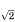
∉ ℝℤ ⊆ ℕ
{0,1,2} ∩ ℕ = ∅
Example 2.3 Here non-statements are paired with similar statements.
NOT a statement: Statement: Add 5 to both sides. Adding 5 to both sides of x − 5 = 37 gives x = 42. ℤ 42 ∈ ℤ 42 42 is not a number. What is the solution of 2x = 84? The solution of 2x = 84 is 42.
Example 2.4 We will often use the letters P, Q, R and S to stand for specific statements. When more letters are needed we can use subscripts. Here are more statements, designated with letters. You decide which of them are true and which are false.
P : For every integer n > 1, the number 2n − 1 is prime.
Q : Every polynomial of degree n has at most n roots.
R : The function f (x) = x2 is continuous.
S1 : ℤ ⊆ ∅
S2 : {0,−1,−2} ∩ ℕ = ∅
Designating statements with letters (as was done above) is a very useful shorthand. In discussing a particular statement, such as “The function f (x) = x2 is continuous,” it is convenient to just refer to it as R to avoid having to write or say it many times.
Statements can contain variables. Here is an example.
P : If an integer x is a multiple of 6, then x is even. This is a sentence that is true. (All multiples of 6 are even, so no matter which multiple of 6 the integer x happens to be, it is even.) Since the sentence P is definitely true, it is a statement. When a sentence or statement P contains a variable such as x, we sometimes denote it as P(x) to indicate that it is saying something about x. Thus the above statement can be denoted as
P(x) : If an integer x is a multiple of 6, then x is even.
A statement or sentence involving two variables might be denoted P(x, y), and so on.
It is quite possible for a sentence containing variables to not be a statement. Consider the following example.
Q(x) : The integer x is even. Is this a statement? Whether it is true or false depends on just which integer x is. It is true if x = 4 and false if x = 7, etc. But without any stipulations on the value of x it is impossible to say whether Q(x) is true or false. Since it is neither definitely true nor definitely false, Q(x) cannot be a statement. A sentence such as this, whose truth depends on the value of one or more variables, is called an open sentence. The variables in an open sentence (or statement) can represent any type of entity, not just numbers. Here is an open sentence where the variables are functions:
R(f, g) : The function f is the derivative of the function g.
This open sentence is true if f (x) = 2x and g(x) = x2. It is false if f (x) = x3 and g(x) = x2, etc. A sentence such as R(f, g) (that involves variables) can be denoted either as R(f, g) or just R. We use the expression R(f, g) when we want to emphasize that the sentence involves variables.
We will have more to say about open sentences later, but for now let’s return to statements.
Statements are everywhere in mathematics. Any result or theorem that has been proved true is a statement. The quadratic formula and the Pythagorean theorem are both statements:
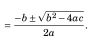
P : The solutions of the equation ax2 + bx + c = 0 are x
Q : If a right triangle has legs of lengths a and b and hypotenuse of
length c, then a2 + b2 = c2.
Here is a very famous statement, so famous, in fact, that it has a name. It is called Fermat’s last theorem after Pierre Fermat, a seventeenthcentury French mathematician who scribbled it in the margin of a book.
R : For all numbers a, b, c, n ∈ ℕ with n > 2, it is the case that an + bn ≠ cn.
Fermat believed this statement to be true. He noted that he could prove it was true, except the book’s margin was too narrow to contain his proof. It is doubtful that he really had a correct proof in mind, for after his death many generations of brilliant mathematicians tried unsuccessfully to prove that his statement was true (or false). Finally, in 1993, Andrew Wiles of Princeton University announced that he had devised a proof. Wiles had worked on the problem for over seven years, and his proof runs through hundreds of pages. The moral of this story is that some true statements are not obviously true.
Here is another statement famous enough to be named. It was first posed in the eighteenth century by the German mathematician Christian Goldbach, and thus is called the Goldbach conjecture:
S : Every even integer greater than 2 is a sum of two prime numbers.
You must agree that S is either true or false. It appears to be true, because when you examine even numbers that are bigger than 2, they seem to be sums of two primes: 4 = 2 + 2, 6 = 3 + 3, 8 = 3 + 5, 10 = 5 + 5, 12 = 5 + 7, 100 = 17 + 83 and so on. But that’s not to say there isn’t some large even number that’s not the sum of two primes. If such a number exists, then S is false. The thing is, in the over 260 years since Goldbach first posed this problem, no one has been able to determine whether it’s true or false. But since it is clearly either true or false, S is a statement.
This book is about the methods that can be used to prove that S (or any other statement) is true or false. To prove that S is true, start with obvious statements (or other statements that have been proven true) and use logic to deduce more and more complex statements until finally we obtain the statement S. Of course some statements are more difficult to prove than others, and S appears to be notoriously difficult; we will concentrate on statements that are easier to prove.
But the point is this: In proving that statements are true, we use logic to help us understand statements and to combine pieces of information to produce new pieces of information. In the next several sections we explore some standard ways that statements can be combined to form new statements, or broken down into simpler statements.
Exercises for Section 2.1
Decide whether or not the following are statements. In the case of a statement, say if it is true or false, if possible.
- Every real number is an even integer.
- Every even integer is a real number.
- If x and y are real numbers and 5x = 5y, then x = y.
- Sets ℤ and ℕ.
- Sets ℤ and ℕ are infinite.
- Some sets are finite.
- The derivative of any polynomial of degree 5 is a polynomial of degree 6.
- ℕ ∉ 𝒫(ℕ).
- cos(x) = −1.
- (ℝ × ℕ) ∩ (ℕ × ℝ) = ℕ × ℕ.
- The integer x is a multiple of 7.
- If the integer x is a multiple of 7, then it is divisible by 7.
- Either x is a multiple of 7, or it is not.
- Call me Ishmael.
- In the beginning, God created the heaven and the earth.
2.2 And, Or, Not
The word “and” can be used to combine two statements to form a new statement. Consider for example the following sentence.
R1 : The number 2 is even and the number 3 is odd.
We recognize this as a true statement, based on our ingrained understanding of the meaning of the word “and.” Notice that R1 is made up of two simpler statements:
P : The number 2 is even.
Q : The number 3 is odd.
These are joined together by the word “and” to form the more complex statement R1. The statement R1 asserts that P and Q are both true. Since both P and Q are in fact true, the statement R1 is also true.
Had one or both of P and Q been false, then R1 would be false. For instance, each of the following statements is false.
R2 : The number 1 is even and the number 3 is odd.
R3 : The number 2 is even and the number 4 is odd.
R4 : The number 3 is even and the number 2 is odd.
From these examples we see that any two statements P and Q can be combined to form a new statement “P and Q.” In the spirit of using letters to denote statements, we now introduce the special symbol ∧ to stand for the word “and.” Thus if P and Q are statements, P ∧Q stands for the statement “P and Q.” The statement P ∧ Q is true if both P and Q are true; otherwise it is false. This is summarized in the following table, called a truth table.
In this table, T stands for “True,” and F stands for “False.” (T and F are called truth values.) Each line lists one of the four possible combinations of truth values for P and Q, and the column headed by P ∧ Q tells whether the statement P ∧ Q is true or false in each case.
Statements can also be combined using the word “or.” Consider the following four statements.
S1 : The number 2 is even or the number 3 is odd.
S2 : The number 1 is even or the number 3 is odd.
S3 : The number 2 is even or the number 4 is odd.
S4 : The number 3 is even or the number 2 is odd. In mathematics, the assertion “P or Q” is always understood to mean that one or both of P and Q is true. Thus statements S1, S2, S3 are all true, while S4 is false. The symbol ∨ is used to stand for the word “or.” So if P and Q are statements, P ∨Q represents the statement “P or Q.” Here is the truth table.
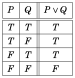
It is important to be aware that the meaning of “or” expressed in the above table differs from the way it is often used in everyday conversation. For example, suppose a university official makes the following threat:
You pay your tuition or you will be withdrawn from school. You understand that this means that either you pay your tuition or you will be withdrawn from school, but not both. In mathematics we never use the word “or” in such a sense. For us “or” means exactly what is stated in the table for ∨. Thus P ∨ Q being true means one or both of P and Q is true. If we ever need to express the fact that exactly one of P and Q is true, we use one of the following constructions:
P or Q, but not both.
Either P or Q.
Exactly one of P or Q. If the university official were a mathematician, he might have qualified his statement in one of the following ways.
Pay your tuition or you will be withdrawn from school, but not both.
Either you pay your tuition or you will be withdrawn from school.
To conclude this section, we mention another way of obtaining new statements from old ones. Given any statement P, we can form the new statement “It is not true that P.” For example, consider the following statement.
The number 2 is even.
This statement is true. Now change it by inserting the words “It is not true that” at the beginning:
It is not true that the number 2 is even.
This new statement is false.
For another example, starting with the false statement “2 ∈ ∅,” we get the true statement “It is not true that 2 ∈ ∅.”
We use the symbol ∼ to stand for the words “It’s not true that,” so ∼ P means “It’s not true that P.” We can read ∼ P simply as “not P.” Unlike ∧ and ∨, which combine two statements, the symbol ∼ just alters a single statement. Thus its truth table has just two lines, one for each possible value of P.
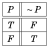
The statement ∼ P is called the negation of P. The negation of a specific statement can be expressed in numerous ways. Consider
P : The number 2 is even.
Here are several ways of expressing its negation.
∼ P : It’s not true that the number 2 is even.
∼ P : It is false that the number 2 is even.
∼ P : The number 2 is not even.
In this section we’ve learned how to combine or modify statements with the operations ∧, ∨ and ∼. Of course we can also apply these operations to open sentences or a mixture of open sentences and statements. For example, (x is an even integer) ∧ (3 is an odd integer) is an open sentence that is a combination of an open sentence and a statement.
Exercises for Section 2.2
Express each statement or open sentence in a symbolic form such as P ∧Q, P ∨Q, P∨∼ Q or ∼ P, etc. Be sure to also state exactly what statements P and Q stand for.
- The number 8 is both even and a power of 2.
- The matrix A is not invertible.
- x ≠ y
- x < y
- y ≥ x
- There is a quiz scheduled for Wednesday or Friday.
- The number x equals zero, but the number y does not.
- At least one of the numbers x and y equals 0.
- x ∈ A − B
- x ∈ A ∪ B
- A ∈ {X ∈ 𝒫(ℕ) : || < ∞}
- Happy families are all alike, but each unhappy family is unhappy in its own way. (Leo Tolstoy, Anna Karenina)
- Human beings want to be good, but not too good, and not all the time. (George Orwell)
- A man should look for what is, and not for what he thinks should be. (Albert Einstein)
2.3 Conditional Statements
There is yet another way to combine two statements. Suppose we have in mind a specific integer a. Consider the following statement about a.
R : If the integer a is a multiple of 6, then a is divisible by 2. We immediately spot this as a true statement based on our knowledge of integers and the meanings of the words “if” and “then.” If integer a is a multiple of 6, then a is even, so therefore a is divisible by 2. Notice that R is built up from two simpler statements:
P : The integer a is a multiple of 6.
Q : The integer a is divisible by 2.
R : If P, then Q.
In general, given any two statements P and Q whatsoever, we can form the new statement “If P, then Q.” This is written symbolically as P ⇒ Q which we read as “If P, then Q,” or “P implies Q.” Like ∧ and ∨, the symbol ⇒ has a very specific meaning. When we assert that the statement P ⇒ Q is true, we mean that if P is true then Q must also be true. (In other words we mean that the condition P being true forces Q to be true.) A statement of form P ⇒ Q is called a conditional statement because it means Q will be true under the condition that P is true.
Think of P ⇒ Q as a promise that whenever P is true, Q will be true also. There is only one way this promise can be broken (i.e., be false), namely if P is true but Q is false. So the truth table for the promise P ⇒ Q is as follows:
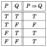
Perhaps you are bothered by how P ⇒ Q is true in the last two lines. Here is an example to explain it. Suppose your professor makes this promise:
If you pass the final exam, then you will pass the course.
Your professor is making the promise
(You pass the exam) ⇒ (You pass the course).
Under what circumstances did she lie? There are four possible scenarios, depending on whether or not you passed the exam and whether or not you passed the course. These scenarios are tallied in the following table.
You pass exam You pass course (You pass exam) ⇒ (You pass course)
T T T
T F F
F T T
F F T
The first row is the scenario in which you pass the exam and you pass the course. Clearly the professor kept her promise, so the T in the third column indicates that she told the truth. In the second row, you passed the exam but failed the course. In this case your professor broke her promise, and the F in the third column indicates that what she said was untrue.
The third row describes the scenario in which you failed the exam but still passed the course. How could that happen? Maybe your professor felt sorry for you. But that doesn’t make her a liar. Her only promise was that if you passed the exam then you would pass the course. She did not say passing the exam was the only way to pass the course. Since she didn’t lie, then she told the truth, so there is a T in the third column.
Finally look at the fourth row: you failed the exam and failed the course. Your professor certainly did not lie to you. Hence the T in the third column.
For another example, consider this statement:
If this month is September, then there is an equinox this month.
An equinox is a day for which there are equal hours of darkness and light. There are two equinoxes per year, one in September and the other in March. The above statement is thus unquestionably true, for it asserts correctly that if the current month is September, then an equinox will occur this month. In symbolic form, our statement is
(This month is September) ⇒ (There is an equinox this month).
This statement is true, but the open sentences P: “This month is September,” and Q: “There is an equinox this month,” are either true or false, depending on what month it is. But P ⇒ Q is always true. This is shown below for three (out of 12) months. Notice how P ⇒ Q is true, even when P is false.
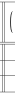
There is an
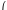
There is an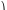
This month This month )
equinox ⇒ equinox
is September is September
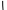
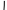
this month this month
Sept. T T T
March F T T
May F F T
As P ⇒ Q is a true statement in this particular example, there is no month with P true and Q false. (Unless we imagine that Earth is destroyed by an asteroid before September 21, a possibility that we shall not entertain.)
In mathematics, whenever we encounter the construction “If P, then Q,” it means exactly what the truth table for ⇒ expresses. Of course there are other grammatical constructions that also mean P ⇒ Q. Here is a summary of the main ones. The meaning of each is encapsulated by the table for ⇒.
P implies Q.
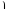
If P, then Q.
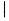
Q if P.
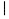
Q whenever P.
Q, provided that P.
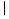
Whenever P, then also Q.
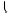
P ⇒ QP is a sufficient condition for Q.
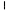
For Q, it is sufficient that P.
Q is a necessary condition for P.
For P, it is necessary that Q.
P only if Q.
These can all be used in the place of (and mean exactly the same thing as) “If P, then Q.” You should analyze the meaning of each one and convince yourself that it captures the meaning of P ⇒ Q. For example, P ⇒ Q means the condition of P being true is enough (i.e., sufficient) to make Q true; hence “P is a sufficient condition for Q.”
The wording can be tricky. An everyday situation may help clarify it. For example, consider your professor’s promise:
(You pass the exam) ⇒ (You pass the course).
This means that your passing the exam is a sufficient (though perhaps not necessary) condition for your passing the course. Thus your professor might just as well have phrased her promise in one of the following ways.
Passing the exam is a sufficient condition for passing the course.
For you to pass the course, it is sufficient that you pass the exam.
However, when we want to say “If P, then Q” in everyday conversation, we do not normally express this as “Q is a necessary condition for P” or “P only if Q.” But such constructions are not uncommon in mathematics. To understand why they make sense, notice that P ⇒ Q being true means that it’s impossible that P is true but Q is false, so in order for P to be true it is necessary that Q is true; hence “Q is a necessary condition for P.” And this means that P can only be true if Q is true, i.e., “P only if Q.”
Exercises for Section 2.3
Without changing their meanings, convert each of the following sentences into a sentence having the form “If P, then Q.”
- A matrix is invertible provided that its determinant is not zero.
- For a function to be continuous, it is sufficient that it is differentiable.
- For a function to be continuous, it is necessary that it is integrable.
- A function is rational if it is a polynomial.
- An integer is divisible by 8 only if it is divisible by 4.
- Whenever a surface has only one side, it is non-orientable.
- A series converges whenever it converges absolutely.
- A geometric series with ratio r converges if |r| < 1.
- A function is integrable provided the function is continuous.
- The discriminant is negative only if the quadratic equation has no real solutions.
- You fail only if you stop writing. (Ray Bradbury)
- People will generally accept facts as truth only if the facts agree with what they already believe. (Andy Rooney)
- Whenever people agree with me I feel I must be wrong. (Oscar Wilde)
2.4 Biconditional Statements
It is important to understand that P ⇒ Q is not the same as Q ⇒ P. To see why, suppose that a is some integer and consider the statements
(a is a multiple of 6) ⇒ (a is divisible by 2),
(a is divisible by 2) ⇒ (a is a multiple of 6).
The first statement asserts that if a is a multiple of 6 then a is divisible by 2. This is clearly true, for any multiple of 6 is even and therefore divisible by 2. The second statement asserts that if a is divisible by 2 then it is a multiple of 6. This is not necessarily true, for a = 4 (for instance) is divisible by 2, yet not a multiple of 6. Therefore the meanings of P ⇒ Q and Q ⇒ P are in general quite different. The conditional statement Q ⇒ P is called the converse of P ⇒ Q, so a conditional statement and its converse express entirely different things.
But sometimes, if P and Q are just the right statements, it can happen that P ⇒ Q and Q ⇒ P are both necessarily true. For example, consider the statements
(a is even) ⇒ (a is divisible by 2),
(a is divisible by 2) ⇒ (a is even).
No matter what value a has, both of these statements are true. Since both P ⇒ Q and Q ⇒ P are true, it follows that (P ⇒ Q) ∧ (Q ⇒ P) is true.
Let’s introduce a new symbol ⇔ to express the meaning of the statement (P ⇒ Q) ∧ (Q ⇒ P). The expression P ⇔ Q is understood to have exactly the same meaning as (P ⇒ Q)∧(Q ⇒ P). According to the previous section, Q ⇒ P is read as “P if Q,” and P ⇒ Q can be read as “P only if Q.” Therefore we pronounce P ⇔ Q as “P if and only if Q.” For example, given an integer a, we have the true statement
(a is even) ⇔ (a is divisible by 2),
which we can read as “The integer a is even if and only if a is divisible by 2.”
The truth table for ⇔ is shown below. Notice that in the first and last rows, both P ⇒ Q and Q ⇒ P are true (according to the truth table for ⇒), so (P ⇒ Q) ∧ (Q ⇒ P) is true, and hence P ⇔ Q is true. However, in the middle two rows one of P ⇒ Q or Q ⇒ P is false, so (P ⇒ Q)∧(Q ⇒ P) is false, making P ⇔ Q false.
Compare the statement R : (a is even) ⇔ (a is divisible by 2) with this truth table. If a is even then the two statements on either side of ⇔ are true, so according to the table R is true. If a is odd then the two statements on either side of ⇔ are false, and again according to the table R is true. Thus R is true no matter what value a has. In general, P ⇔ Q being true means P and Q are both true or both false.
Not surprisingly, there are many ways of saying P ⇔ Q in English. The following constructions all mean P ⇔ Q:
P if and only if Q.
P is a necessary and sufficient condition for Q.
For P it is necessary and sufficient that Q. P ⇔ Q
P is equivalent to Q.
If P, then Q, and conversely.
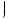
The first three of these just combine constructions from the previous section to express that P ⇒ Q and Q ⇒ P. In the last one, the words “...and conversely” mean that in addition to “If P, then Q” being true, the converse statement “If Q, then P” is also true.
Exercises for Section 2.4
Without changing their meanings, convert each of the following sentences into a sentence having the form “P if and only if Q.”
- For matrix A to be invertible, it is necessary and sufficient that det(A) ≠ 0.
- If a function has a constant derivative then it is linear, and conversely.
- If xy = 0 then x = 0 or y = 0, and conversely.
- If a ∈ ℚ then 5a ∈ ℚ, and if 5a ∈ ℚ then a ∈ ℚ.
- For an occurrence to become an adventure, it is necessary and sufficient for one to recount it. (Jean-Paul Sartre)
2.5 Truth Tables for Statements
You should now know the truth tables for ∧, ∨, ∼, ⇒ and ⇔. They should be internalized as well as memorized. You must understand the symbols thoroughly, for we now combine them to form more complex statements.
For example, suppose we want to convey that one or the other of P and Q is true but they are not both true. No single symbol expresses this, but we could combine them as
(P ∨ Q)∧∼ (P ∧ Q),
which literally means:
P or Q is true, and it is not the case that both P and Q are true. This statement will be true or false depending on the truth values of P and Q. In fact we can make a truth table for the entire statement. Begin as usual by listing the possible true/false combinations of P and Q on four lines. The statement (P ∨ Q)∧∼ (P ∧ Q) contains the individual statements (P ∨ Q) and (P ∧ Q), so we next tally their truth values in the third and fourth columns. The fifth column lists values for ∼ (P ∧ Q), and these are just the opposites of the corresponding entries in the fourth column. Finally, combining the third and fifth columns with ∧, we get the values for (P ∨ Q)∧∼ (P ∧ Q) in the sixth column.
P Q (P ∨Q) (P ∧Q) ∼ (P ∧Q) (P ∨Q)∧∼ (P ∧Q)
T T T T F F
T F T F T T
F T T F T T
F F F F T F
This truth table tells us that (P ∨ Q)∧∼ (P ∧ Q) is true precisely when one but not both of P and Q are true, so it has the meaning we intended. (Notice that the middle three columns of our truth table are just “helper columns” and are not necessary parts of the table. In writing truth tables, you may choose to omit such columns if you are confident about your work.)
For another example, consider the following familiar statement about real numbers x and y:
The product xy equals zero if and only if x = 0 or y = 0.
This can be modeled as (xy = 0) ⇔ (x = 0 ∨ y = 0). If we introduce letters P,Q and R for the statements xy = 0, x = 0 and y = 0, it becomes P ⇔ (Q∨R). Notice that the parentheses are necessary here, for without them we wouldn’t know whether to read the statement as P ⇔ (Q ∨ R) or (P ⇔ Q) ∨ R.
Making a truth table for P ⇔ (Q ∨ R) entails a line for each T/F combination for the three statements P, Q and R. The eight possible combinations are tallied in the first three columns of the following table.
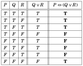
We fill in the fourth column using our knowledge of the truth table for ∨. Finally the fifth column is filled in by combining the first and fourth columns with our understanding of the truth table for ⇔. The resulting table gives the true/false values of P ⇔ (Q ∨ R) for all values of P, Q and R.
Notice that when we plug in various values for x and y, the statements P : xy = 0, Q : x = 0 and R : y = 0 have various truth values, but the statement P ⇔ (Q ∨ R) is always true. For example, if x = 2 and y = 3, then P, Q and R are all false. This scenario is described in the last row of the table, and there we see that P ⇔ (Q ∨ R) is true. Likewise if x = 0 and y = 7, then P and Q are true and R is false, a scenario described in the second line of the table, where again P ⇔ (Q ∨ R) is true. There is a simple reason why P ⇔ (Q ∨R) is true for any values of x and y: It is that P ⇔ (Q ∨R) represents (xy = 0) ⇔ (x = 0 ∨ y = 0), which is a true mathematical statement. It is absolutely impossible for it to be false.
This may make you wonder about the lines in the table where P ⇔ (Q∨R) is false. Why are they there? The reason is that P ⇔ (Q ∨ R) can also represent a false statement. To see how, imagine that at the end of the semester your professor makes the following promise.
You pass the class if and only if you get an “A” on the final or you get a
“B” on the final.
This promise has the form P ⇔ (Q ∨ R), so its truth values are tabulated in the above table. Imagine it turned out that you got an “A” on the exam but failed the course. Then surely your professor lied to you. In fact, P is false, Q is true and R is false. This scenario is reflected in the sixth line of the table, and indeed P ⇔ (Q ∨ R) is false (i.e., it is a lie).
The moral of this example is that people can lie, but true mathematical statements never lie.
We close this section with a word about the use of parentheses. The symbol ∼ is analogous to the minus sign in algebra. It negates the expression it precedes. Thus ∼ P ∨ Q means (∼ P) ∨ Q, not ∼ (P ∨ Q). In ∼ (P ∨ Q), the value of the entire expression P ∨ Q is negated.
Exercises for Section 2.5
Write a truth table for the logical statements in problems 1–9:
- P ∨ (Q ⇒ R)
- (Q ∨ R) ⇔ (R ∧Q)
- ∼ (P ⇒ Q)
- ∼ (P ∨Q) ∨ (∼ P)
- (P∧∼ P) ∨Q
- (P∧∼ P) ∧Q
- (P∧∼ P) ⇒ Q
- P ∨ (Q∧∼ R)
- ∼ (∼ P∨∼ Q)
- Suppose the statement ((P ∧Q) ∨ R) ⇒ (R ∨ S) is false. Find the truth values of P,Q,R and S. (This can be done without a truth table.)
- Suppose P is false and that the statement (R ⇒ S) ⇔ (P ∧ Q) is true. Find the truth values of R and S. (This can be done without a truth table.)
2.6 Logical Equivalence
In contemplating the truth table for P ⇔ Q, you probably noticed that P ⇔ Q is true exactly when P and Q are both true or both false. In other words, P ⇔ Q is true precisely when at least one of the statements P ∧Q or ∼ P∧∼ Q is true. This may tempt us to say that P ⇔ Q means the same thing as (P ∧ Q) ∨ (∼ P∧∼ Q).
To see if this is really so, we can write truth tables for P ⇔ Q and (P ∧ Q) ∨ (∼ P∧∼ Q). In doing this, it is more efficient to put these two statements into the same table, as follows. (This table has helper columns for the intermediate expressions ∼ P, ∼ Q, (P ∧ Q) and (∼ P∧∼ Q).)
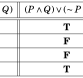
P Q ∼ P ∼ Q (P ∧Q) (∼ P∧∼ ∧∼ Q) P ⇔ Q
T T F F T F T
T F F T F F F
F T T F F F F
F F T T F T T
The table shows that P ⇔ Q and (P ∧ Q) ∨ (∼ P∧∼ Q) have the same truth value, no matter the values P and Q. It is as if P ⇔ Q and (P ∧Q)∨(∼ P∧∼ Q) are algebraic expressions that are equal no matter what is “plugged into” variables P and Q. We express this state of affairs by writing
P ⇔ Q = (P ∧ Q) ∨ (∼ P∧∼ Q)
and saying that P ⇔ Q and (P ∧ Q) ∨ (∼ P∧∼ Q) are logically equivalent.
In general, two statements are logically equivalent if their truth values match up line-for-line in a truth table.
Logical equivalence is important because it can give us different (and potentially useful) ways of looking at the same thing. As an example, the following table shows that P ⇒ Q is logically equivalent to (∼ Q) ⇒ (∼ P).
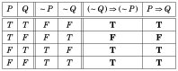
The fact P ⇒ Q = (∼ Q) ⇒ (∼ P) is useful because so many theorems have the form P ⇒ Q. As we will see in Chapter 5, proving such a theorem may be easier if we express it in the logically equivalent form (∼ Q) ⇒ (∼ P).
Two pairs of logically equivalent statements in particular are significant enough to have a special name: DeMorgan’s laws.
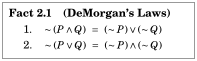
The first of DeMorgan’s laws is verified by the following table. You are asked to verify the second in one of the exercises.
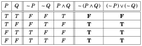
DeMorgan’s laws are actually very natural and intuitive. Consider the statement ∼ (P ∧ Q), which we can interpret as meaning that it is not the case that both P and Q are true. If it is not the case that both P and Q are true, then at least one of P or Q is false, in which case (∼ P) ∨ (∼ Q) is true. Thus ∼ (P ∧ Q) means the same thing as (∼ P) ∨ (∼ Q).
DeMorgan’s laws can be very useful. Suppose we happen to know that some statement of form ∼ (P ∨ Q) is true. The second of DeMorgan’s laws tells us that (∼ P) ∧ (∼ Q) is also true, hence ∼ P and ∼ Q are both true as well. Quickly obtaining this additional information can be extremely useful.
Here is a summary of some significant logical equivalences. Those that are not immediately obvious can be verified with truth tables.
P ⇒ Q = (∼ Q) ⇒ (∼ P) Contrapositive law (2.1)
∼ (P ∧ Q) = ∼ P∨∼ Q
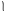
DeMorgan’s laws (2.2)
∼ (P ∨ Q) = ∼ P∧∼ Q
P ∧ Q = Q ∧ P
Commutative laws (2.3)
P ∨ Q = Q ∨ P
P ∧ (Q ∨ R) = (P ∧ Q) ∨ (P ∧ R)
Distributive laws (2.4)
P ∨ (Q ∧ R) = (P ∨ Q) ∧ (P ∨ R)
P ∧ (Q ∧ R) = (P ∧ Q) ∧ R
Associative laws (2.5)
P ∨ (Q ∨ R) = (P ∨ Q) ∨ R
Notice how the distributive law P ∧ (Q ∨ R) = (P ∧ Q) ∨ (P ∧ R) has the same structure as the distributive law p · (q + r) = p · q + p · r from algebra. Concerning the associative laws, the fact that P ∧(Q ∧ R) = (P ∧Q)∧ R means that the position of the parentheses is irrelevant, and we can write this as P ∧ Q ∧ R without ambiguity. Similarly, we may drop the parentheses in an expression such as P ∨ (Q ∨ R).
But parentheses are essential when there is a mix of ∧ and ∨, as in P ∨ (Q ∧ R). Indeed, P ∨ (Q ∧ R) and (P ∨ Q) ∧ R are not logically equivalent. (See Exercise 13 for Section 2.6, below.)
Exercises for Section 2.6
A. Use truth tables to show that the following statements are logically equivalent.
- P ∧ (Q ∨ R) = (P ∧Q) ∨ (P ∧ R)
- P ∨ (Q ∧ R) = (P ∨Q) ∧ (P ∨ R)
- P ⇒ Q = (∼ P) ∨Q
- ∼ (P ∨Q) = (∼ P) ∧ (∼ Q)
- ∼ (P ∨Q ∨ R) = (∼ P) ∧ (∼ Q) ∧ (∼ R)
- ∼ (P ∧Q ∧ R) = (∼ P) ∨ (∼ Q) ∨ (∼ R)
- P ⇒ Q = (P∧∼ Q) ⇒ (Q∧∼ Q)
- ∼ P ⇔ Q = (P ⇒∼ Q) ∧ (∼ Q ⇒ P)
B. Decide whether or not the following pairs of statements are logically equivalent.
- P ∧Q and ∼ (∼ P∨∼ Q)
- (P ⇒ Q) ∨ R and ∼ ((P∧∼ Q)∧∼ R)
- (∼ P) ∧ (P ⇒ Q) and ∼ (Q ⇒ P)
- ∼ (P ⇒ Q) and P∧∼ Q
- P ∨ (Q ∧ R) and (P ∨Q) ∧ R
- P ∧ (Q∨∼ Q) and (∼ P) ⇒ (Q∧∼ Q)
2.7 Quantifiers
Using symbols ∧, ∨, ∼, ⇒ and ⇔, we can deconstruct many English sentences into a symbolic form. As we have seen, this symbolic form can help us understand the logical structure of sentences and how different sentences may actually have the same meaning (as in logical equivalence).
But these symbols alone are not powerful enough to capture the full meaning of every statement. To see why, imagine that we are dealing with an infinite set X = {x1, x2, x3,...} of integers. Suppose we want to express the statement “Every element of X is odd.” We would have to write
P(x1) ∧ P(x2) ∧ P(x3) ∧ P(x4) ∧··· ,
where P(x) is the open sentence “x is odd.” And if we wanted to express “There is at least one element of X that is odd,” we’d have to write
P(x1) ∨ P(x2) ∨ P(x3) ∨ P(x4) ∨··· .
The problem is that these expressions trail on forever.
To overcome this defect, we will introduce two new symbols ∀ and ∃. The symbol ∀ stands for the phrase “for all” and ∃ stands for “there exists.” Thus the statement “Every element of X is odd.” is written symbolically as
∀x ∈ X , P(x),
and “There is at least one element of X that is odd,” is written succinctly as
∃x ∈ X , P(x),
These new symbols are called quantifiers.
Definition 2.1 The symbols ∀ and ∃ are called quantifiers.
∀ stands for the phrase “For all” or “For every,” or “For each,”
∃ stands for the phrase “There exists a” or “There is a.”
Thus the statement
For every n ∈ ℤ, 2n is even, can be expressed in either of the following ways:
∀ n ∈ ℤ, 2n is even,
∀ n ∈ ℤ, E(2n) (where E(x) means x is even). Likewise, a statement such as
There exists a subset X of ℕ for which |X | = 5.
can be translated as
∃ X , (X ⊆ ℕ) ∧ (|X | = 5) or ∃ X ⊆ ℕ, |X | = 5 or ∃ X ∈ 𝒫(ℕ), |X | = 5.
The symbols ∀ and ∃ are called quantifiers because they refer in some sense to the quantity (i.e., all or some) of the variable that follows them. The symbol ∀ is called the universal quantifier and ∃ is called the existential quantifier. Statements containing them are called quantified statements. A statement beginning with ∀ is called a universally quantified statement, and one beginning with ∃ is called an existentially quantified statement.
Example 2.5 The following English statements are paired with their translations into symbolic form.
Every integer that is not odd is even.
∀ n ∈ ℤ,∼ (n is odd ) ⇒ (n is even), or ∀ n ∈ ℤ,∼ O(n) ⇒ E(n).
There is an integer that is not even.
∃ n ∈ ℤ,∼ E(n).
For every real number x, there is a real number y for which y3 = x.
∀ x ∈ ℝ,∃ y ∈ ℝ, y3 = x.
Given any two rational numbers a and b, the product ab is rational.
∀ a, b ∈ ℚ, ab ∈ ℚ.
Given a set X (such as, but not limited to, ℕ, ℤ, ℚ, etc.), a quantified statement of form ∀ x ∈ X , P(x) is understood to be true if P(x) is true for every x ∈ X . If there is at least one x ∈ X for which P(x) is false, then ∀ x ∈ X , P(x) is a false statement. Similarly, ∃ x ∈ X , P(x) is true provided that P(x) is true for at least one element x ∈ X ; otherwise it is false. Thus each statement in Example 2.5 is true. Here are some examples of quantified statements that are false:
Example 2.6 The following false quantified statements are paired with their translations.
Every integer is even.
∀ n ∈ ℤ, E(n).
There is an integer n for which n2 = 2.
∃ n ∈ ℤ, n2 = 2.
For every real number x, there is a real number y for which y2 = x.
∀ x ∈ ℝ, ∃ y ∈ ℝ, y2 = x.
Given any two rational numbers a and b, the number
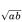
is rational.∀ a, b ∈ ℚ,
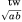
∈ ℚ.Example 2.7 When a statement contains two quantifiers you must be very alert to their order, for reversing the order can change the meaning. Consider the following statement from Example 2.5.
∀ x ∈ ℝ,∃ y ∈ ℝ, y3 = x.
This statement is true, for no matter what number x is there exists a number y =
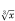
for which y3 = x. Now reverse the order of the quantifiers to get the new statement∃ y ∈ ℝ,∀ x ∈ ℝ, y3 = x.
This new statement says that there exists a particular number y with the property that y3 = x for every real number x. Since no number y can have this property, the statement is false. The two statements above have entirely different meanings.
Quantified statements are often misused in casual conversation. Maybe you’ve heard someone say “All students do not pay full tuition.” when they mean “Not all students pay full tuition.” While the mistake is perhaps marginally forgivable in casual conversation, it must never be made in a mathematical context. Do not say “All integers are not even.” because that means there are no even integers. Instead, say “Not all integers are even.”
Exercises for Section 2.7
Write the following as English sentences. Say whether they are true or false.
- ∀ x ∈ ℝ, x2 > 0
- ∀ x ∈ ℝ,∃ n ∈ ℕ, xn ≥ 0
- ∃a ∈ ℝ,∀ x ∈ ℝ,ax = x
- ∀ X ∈ 𝒫(ℕ), X ⊆ ℝ
- ∀ n ∈ ℕ,∃ X ∈ 𝒫(ℕ),|X| < n
- ∃ n ∈ ℕ,∀ X ∈ 𝒫(ℕ),|X| < n
- ∀ X ⊆ ℕ,∃ n ∈ ℤ,|X| = n
- ∀ n ∈ ℤ, ∃ X ⊆ ℕ,|X| = n
- ∀ n ∈ ℤ,∃ m ∈ ℤ, m = n + 5
- ∃ m ∈ ℤ,∀ n ∈ ℤ, m = n + 5
2.8 More on Conditional Statements
It is time to address a very important point about conditional statements that contain variables. To motivate this, let’s return to the following example concerning integers x:
(x is a multiple of 6) ⇒ (x is even).
As noted earlier, since every multiple of 6 is even, this is a true statement no matter what integer x is. We could even underscore this fact by writing this true statement as
∀ x ∈ ℤ, (x is a multiple of 6) ⇒ (x is even).
But now switch things around to get the different statement
(x is even) ⇒ (x is a multiple of 6).
This is true for some values of x such as −6, 12, 18, etc., but false for others (such as 2, 4, etc.). Thus we do not have a statement, but rather an open sentence. (Recall from Section 2.1 that an open sentence is a sentence whose truth value depends on the value of a certain variable or variables.) However, by putting a universal quantifier in front we get
∀ x ∈ ℤ, (x is even) ⇒ (x is a multiple of 6),
which is definitely false, so this new expression is a statement, not an open sentence. In general, given any two open sentences P(x) and Q(x) about integers x, the expression ∀ x ∈ ℤ, P(x) ⇒ Q(x) is either true or false, so it is a statement, not an open sentence.
Now we come to the very important point. In mathematics, whenever P(x) and Q(x) are open sentences concerning elements x in some set X (depending on context), an expression of form P(x) ⇒ Q(x) is understood to be the statement ∀ x ∈ X , P(x) ⇒ Q(x). In other words, if a conditional statement is not explicitly quantified then there is an implied universal quantifier in front of it. This is done because statements of the form ∀ x ∈ X , P(x) ⇒ Q(x) are so common in mathematics that we would get tired of putting the ∀ x ∈ X in front of them.
Thus the following sentence is a true statement (as it is true for all x).
If x is a multiple of 6, then x is even. Likewise, the next sentence is a false statement (as it is not true for all x).
If x is even, then x is a multiple of 6.
This leads to the following significant interpretation of a conditional statement, which is more general than (but consistent with) its definition in Section 2.3.
Definition 2.2 If P and Q are statements or open sentences, then
“If P, then Q,”
is a statement. This statement is true if it’s impossible for P to be true while Q is false. It is false if there is at least one instance in which P is true but Q is false.
Thus the following are true statements:
If x ∈ ℝ, then x2 + 1 > 0.
If a function f is differentiable on ℝ, then f is continuous on ℝ.
Likewise, the following are false statements:
If p is a prime number, then p is odd. (2 is prime.)
If f is a rational function, then f has an asymptote. (x2 is rational.)
2.9 Translating English to Symbolic Logic
In writing (and reading) proofs of theorems, we must always be alert to the logical structure and meanings of the sentences. Sometimes it is necessary or helpful to parse them into expressions involving logic symbols. This may be done mentally or on scratch paper, or occasionally even explicitly within the body of a proof. The purpose of this section is to give you sufficient practice in translating English sentences into symbolic form so that you can better understand their logical structure. Here are some examples:
Example 2.8 Consider the Mean Value Theorem from Calculus:
If f is continuous on the interval [a, b] and differentiable on (a, b), then
there is a number c ∈ (a, b) for which f ′(c) =
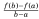
.Here is a translation to symbolic form:
((f cont. on [a, b]) ∧ (f is diff. on (a, b))) ⇒ (∃ c ∈ (a, b), f ′(c) =
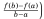
.Example 2.9 Consider Goldbach’s conjecture, from Section 2.1:
Every even integer greater than 2 is the sum of two primes.
This can be translated in the following ways, where P is the set of prime numbers and X = {4,6,8,10,...} is the set of even integers greater than 2.
(n ∈ X ) ⇒ (∃ p, q ∈ P, n = p + q)
∀ n ∈ X , ∃ p, q ∈ P, n = p + q
These translations of Goldbach’s conjecture illustrate an important point. The first has the basic structure (n ∈ X ) ⇒ Q(n) and the second has structure ∀ n ∈ X , Q(n), yet they have exactly the same meaning. This is significant. Every universally quantified statement can be expressed as a conditional statement.
Fact 2.2 Suppose X is a set and Q(x) is a statement about x for each x ∈ X . The following statements mean the same thing:
∀ x ∈ X , Q(x)
(x ∈ X ) ⇒ Q(x).
This fact is significant because so many theorems have the form of a conditional statement. (The Mean Value Theorem is an example.) In proving a theorem we have to think carefully about what it says. Sometimes a theorem will be expressed as a universally quantified statement, but it will be more convenient to think of it as a conditional statement. Understanding the above fact allows us to switch between the two forms.
The section closes with some final points. In translating a statement, be attentive to its intended meaning. Don’t jump into, for example, automatically replacing every “and” with ∧ and “or” with ∨. An example:
At least one of the integers x and y is even.
Don’t be led astray by the presence of the word “and.” The meaning of the statement is that one or both of the numbers is even, so it should be translated with “or,” not “and”:
(x is even) ∨ (y is even).
Finally, the logical meaning of “but” can be captured by “and.” The sentence “The integer x is even, but the integer y is odd,” is translated as
(x is even) ∧ (y is odd).
Exercises for Section 2.9
Translate each of the following sentences into symbolic logic.
- If f is a polynomial and its degree is greater than 2, then f ′ is not constant.
- The number x is positive but the number y is not positive.
- If x is prime, then is not a rational number.
- For every prime number p, there is another prime number q with q > p.
- For every positive number ε, there is a positive number δ for which |x − a| < δ implies |f (x) − f (a)| < ε.
- For every positive number ε, there is a positive number M for which |f (x)− b| < ε, whenever x > M.
- There exists a real number a for which a + x = x for every real number x.
- I don’t eat anything that has a face.
- If x is a rational number and x ≠ 0, then tan(x) is not a rational number.
- If sin(x) < 0, then it is not the case that 0 ≤ x ≤ π.
- There is a Providence that protects idiots, drunkards, children and the United States of America. (Otto von Bismarck)
- You can fool some of the people all of the time, and you can fool all of the people some of the time, but you can’t fool all of the people all of the time. (Abraham Lincoln)
- Everything is funny as long as it is happening to somebody else. (Will Rogers)
2.10 Negating Statements
Given a statement R, the statement ∼ R is called the negation of R. If R is a complex statement, then it is often the case that its negation ∼ R can be written in a simpler or more useful form. The process of finding this form is called negating R. In proving theorems it is often necessary to negate certain statements. We now investigate how to do this.
We have already examined part of this topic. DeMorgan’s laws
∼ (P ∧ Q) = (∼ P) ∨ (∼ Q) (2.6)
∼ (P ∨ Q) = (∼ P) ∧ (∼ Q) (2.7)
(from Section 2.6) can be viewed as rules that tell us how to negate the statements P ∧ Q and P ∨ Q. Here are some examples that illustrate how DeMorgan’s laws are used to negate statements involving “and” or “or.”
Example 2.10 Consider negating the following statement.
R : You can solve it by factoring or with the quadratic formula.
Now, R means (You can solve it by factoring) ∨ (You can solve it with Q.F.), which we will denote as P ∨ Q. The negation of this is
∼ (P ∨ Q) = (∼ P) ∧ (∼ Q).
Therefore, in words, the negation of R is
∼ R : You can’t solve it by factoring and you can’t solve it with
the quadratic formula.
Maybe you can find ∼ R without invoking DeMorgan’s laws. That is good; you have internalized DeMorgan’s laws and are using them unconsciously.
Example 2.11 We will negate the following sentence.
R : The numbers x and y are both odd.
This statement means (x is odd) ∧ (y is odd), so its negation is
∼ ((x is odd) ∧ (y is odd)) = ∼ (x is odd) ∨∼ (y is odd)
= (x is even) ∨ (y is even).
Therefore the negation of R can be expressed in the following ways:
∼ R : The number x is even or the number y is even.
∼ R : At least one of x and y is even.
Now let’s move on to a slightly different kind of problem. It’s often necessary to find the negations of quantified statements. For example, consider ∼ (∀ x ∈ ℕ, P(x)). Reading this in words, we have the following:
It is not the case that P(x) is true for all natural numbers x.
This means P(x) is false for at least one x. In symbols, this is ∃ x ∈ ℕ, ∼ P(x). Thus ∼ (∀ x ∈ ℕ, P(x)) = ∃ x ∈ ℕ, ∼ P(x). Similarly, you can reason out that ∼ (∃ x ∈ ℕ, P(x)) = ∀ x ∈ ℕ, ∼ P(x). In general:
∼ (∀ x ∈ X , P(x)) = ∃ x ∈ X , ∼ P(x), (2.8)
∼ (∃ x ∈ X , P(x)) = ∀ x ∈ X , ∼ P(x). (2.9)
Be sure that you understand these two logical equivalences. They conform to our everyday use of language, but they pin down the meaning in a mathematically precise way.
Example 2.12 Consider negating the following statement.
R : The square of every real number is non-negative. Symbolically, R can be expressed as ∀ x ∈ ℝ, x2 ≥ 0, and thus its negation is ∼ (∀ x ∈ ℝ, x2 ≥ 0) = ∃ x ∈ ℝ, ∼ (x2 ≥ 0) = ∃ x ∈ ℝ, x2 < 0. In words, this is
∼ R : There exists a real number whose square is negative. Observe that R is true and ∼ R is false. Maybe you can get ∼ R immediately, without using Equation (2.8) as we did above. If so, that is good; if not, you should be there soon.
Example 2.13 If a statement has multiple quantifiers, negating it involves several iterations of Equations (2.8) and (2.9). Consider the following:
S : For every real number x, there is a real number y for which y3 = x. This statement asserts any real number x has a cube root y, so it’s true. Symbolically S can be expressed as
∀ x ∈ ℝ,∃ y ∈ ℝ, y3 = x.
Let’s work out the negation of this statement.
∼ (∀ x ∈ ℝ,∃ y ∈ ℝ, y3 = x) = ∃ x ∈ ℝ,∼ (∃ y ∈ ℝ, y3 = x)
= ∃ x ∈ ℝ,∀ y ∈ ℝ, ∼ (y3 = x)
= ∃ x ∈ ℝ,∀ y ∈ ℝ, y3 ≠ x.
Thus the negation is a (false) statement that can be written in either of the following ways.
∼ S : There is a real number x such that for all real numbers y, y3 ≠ x.
∼ S : There is a real number x for which y3 ≠ x for all real numbers y.
In writing proofs you will occasionally have to negate a conditional statement P ⇒ Q. The remainder of this section describes how to do this. To begin, look at the expression ∼ (P ⇒ Q), which literally says “P ⇒ Q is false.” You know from the truth table for ⇒ that the only way that P ⇒ Q can be false is if P is true and Q is false. Therefore
∼ (P ⇒ Q) = P∧∼ Q. (2.10)
(In fact, in Exercise 12 of Section 2.6, you used a truth table to verify that these two statements are indeed logically equivalent.)
Example 2.14 Negate the following statement about a particular (i.e., constant) number a.
R : If a is odd, then a2 is odd.
Using Equation (2.10), we get the following negation.
∼ R : a is odd and a2 is not odd.
Example 2.15 This example is like the previous one, but the constant a is replaced by a variable x. We will negate the following statement.
R : If x is odd, then x2 is odd.
As in Section 2.8, we interpret this as the universally quantified statement
R : ∀x ∈ ℤ, (x odd) ⇒ (x2 odd).
By Equations (2.8) and (2.10), we get the following negation for R.
∼ (∀x ∈ ℤ, (x odd) ⇒ (x2 odd)) = ∃x ∈ ℤ,∼ ((x odd) ⇒ (x2 odd))
= ∃x ∈ ℤ,(x odd)∧∼ (x2 odd).
Translating back into words, we have
∼ R : There is an odd integer x whose square is not odd.
Notice that R is true and ∼ R is false.
The above Example 2.15 showed how to negate a conditional statement P(x) ⇒ Q(x). This type of problem can sometimes be embedded in more complex negation. See Exercise 5 below (and its solution).
Exercises for Section 2.10
Negate the following sentences.
- The number x is positive, but the number y is not positive.
- If x is prime, then
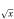
is not a rational number. - For every prime number p, there is another prime number q with q > p.
- For every positive number ε, there is a positive number δ such that |x − a| < δ implies |f (x) − f (a)| < ε.
- For every positive number ε, there is a positive number M for which |f (x)− b| < ε whenever x > M.
- There exists a real number a for which a + x = x for every real number x.
- I don’t eat anything that has a face.
- If x is a rational number and x ≠ 0, then tan(x) is not a rational number.
- If sin(x) < 0, then it is not the case that 0 ≤ x ≤ π.
- If f is a polynomial and its degree is greater than 2, then f ′ is not constant.
- You can fool all of the people all of the time.
- Whenever I have to choose between two evils, I choose the one I haven’t tried yet. (Mae West)
2.11 Logical Inference
Suppose we know that a conditional statement P ⇒ Q is true. This tells us that whenever P is true, Q will also be true. By itself, P ⇒ Q being true does not tell us that either P or Q is true (they could both be false, or P could be false and Q true). But if in addition we happen to know that P is true, then Q must be true. This is called a logical inference: From two true statements we infer that a third statement is true. In essence, statements P ⇒ Q and P are “added together” to get Q. We can indicate this by stacking P ⇒ Q and P one atop the other with a line separating them from Q. The intended meaning is that P ⇒ Q combined with P produces Q.
P ⇒ Q
P
Q
This is a very frequently-used pattern of thought. (In fact, it is exactly the pattern we used in the example on page 34.) This rule even has a name. It is called the modus ponens rule.
Two other logical inferences, called modus tollens and elimination are listed below. In each case you should convince yourself (based on your knowledge of the relevant truth tables) that the truth of the statements above the line forces the statement below the line to be true.
Modus Ponens Modus Tollens Elimination
P ⇒ Q P ⇒ Q P ∨Q
P ∼ Q ∼ P
Q ∼ P Q
It is important to internalize these rules. (You already use at least modus ponens and elimination in daily life anyway.) But you need not remember their names; few mathematicians can recall the names, though they use the rules constantly. The names are not important, but the rules are.
Three additional logical inferences are listed below. The first states the obvious fact that if P and Q are both true, then so is the statement P ∧ Q. On the other hand, P ∧ Q being true forces P (also Q) to be true. Finally, if P is true, then P ∨ Q must be true, no matter what statement Q is.
P
Q P ∧Q P
P ∧Q P P ∨Q
These inferences are so intuitively obvious that they scarcely need to be mentioned. However, they represent certain patterns of reasoning that we will frequently apply to sentences in proofs, so we should be cognizant of the fact that we are using them.
2.12 An Important Note
It is important to be aware of the reasons that we study logic. There are three very significant reasons. First, the truth tables we studied tell us the exact meanings of the words such as “and,” “or,” “not” and so on. For instance, whenever we use or read the “If..., then” construction in a mathematical context, logic tells us exactly what is meant. Second, the rules of inference provide a system in which we can produce new information (statements) from known information. Finally, logical rules such as DeMorgan’s laws help us correctly change certain statements into (potentially more useful) statements with the same meaning. Thus, logic helps us understand the meanings of statements, and it also produces new meaningful statements.
Logic is the glue that holds strings of statements together and pins down the exact meaning of certain key phrases such as the “If..., then” or “For all” constructions. Logic is the common language that all mathematicians use, so we must have a firm grip on it in order to write and understand mathematics.
But despite its fundamental role, logic’s place is in the background of what we do, not the forefront. From here on, the beautiful symbols ∧, ∨, ⇒, ⇔, ∼, ∀ and ∃ are rarely written. But we are aware of their meanings constantly. When reading or writing a sentence involving mathematics we parse it with these symbols, either mentally or on scratch paper, so as to understand the true and unambiguous meaning.